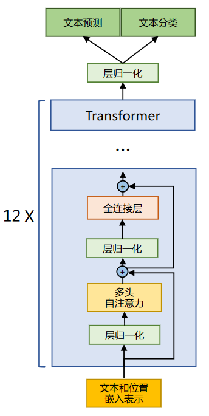
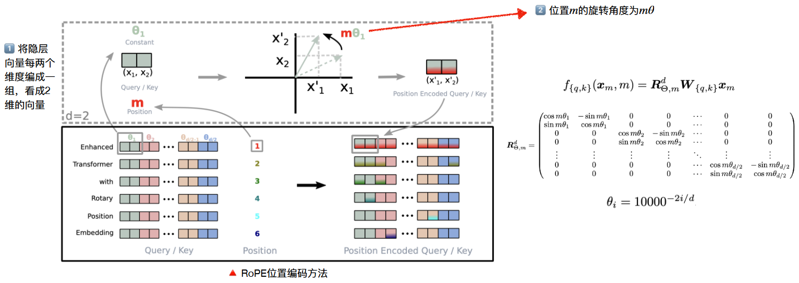
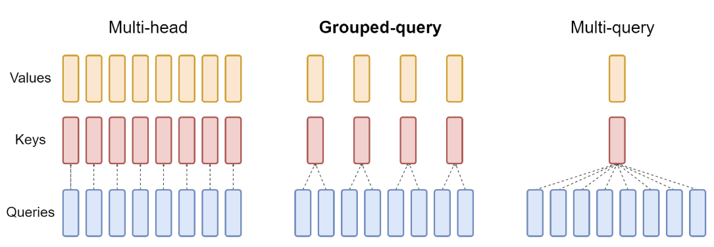

LLaMA系列模型架构
1.LLama
1.1 简介
Open and Efficient Foundation Language Models (Open但没完全Open的LLaMA)
2023年2月，Meta（原Facebook）推出了LLaMA大模型，使用了1.4T token进行训练，虽然最大模型只有65B，但在相关评测任务上的效果可以媲美甚至超过千亿级大模型，被认为是近期开源大模型百花⻬放的开端之一，“羊驼”系列模型及其生态快速发展。
LLaMA 所采用的 Transformer 结构和细节，与标准的 Transformer 架构不同的地方包括采用了前置层归一化（Pre-normalization）并使用 RMSNorm 归一化函数 （Normalizing Function）、激活函数更换为 SwiGLU，并使用了旋转位置嵌入（RoP），整体 Transformer 架构与 GPT-2 类似。

1.2 RMSNorm归一化函数
为了使得模型训练过程更加稳定，GPT-2 相较于 GPT 就引入了前置层归一化方法，将第一个层归一化移动到多头自注意力层之前，第二个层归一化也移动到了全连接层之前，同时残差连接的位置也调整到了多头自注意力层与全连接层之后。层归一化中也采用了 RMSNorm 归一化函数。 针对输入向量 aRMSNorm 函数计算公式如下
此外，RMSNorm 还可以引入可学习的缩放因子 $ g
i $和偏移参数 $b_i$，从而得到 $\bar{a}{i}=\frac{a{i}}{\operatorname{RMS}(\boldsymbol{a})} g{i}+b_{i}$。 RMSNorm 在 HuggingFace Transformer 库中代码实现如下所示：
1 | class LlamaRMSNorm(nn.Module): |
1.3 SwiGLU计划函数
SwiGLU激活函数是相较于 ReLU 函数在大部分评测中都有不少提升。在 LLaMA 中全连接层 使用带有 SwiGLU 激活函数的 FFN（Position-wise Feed-Forward Network）的计算公式如下：
其中，$σ(x)$ 是 Sigmoid 函数。下图给出了 Swish 激活函数在参数 $β$ 不同取值下的形状。可以看 到当 $β$ 趋近于 0 时，Swish 函数趋近于线性函数 $y = x$，当 $ β $趋近于无穷大时，Swish 函数趋近于 ReLU 函数，$β$ 取值为 1 时，Swish 函数是光滑且非单调。在 HuggingFace 的 Transformer 库中 Swish1 函数使用 silu 函数代替。
LLaMA中直接将FFN中的ReLU替换为SwiGLU，并将维度放缩为$(2/3) ⋅ 4d$

1.4 旋转位置嵌入（RoPE）
在位置编码上，使用旋转位置嵌入（Rotary Positional Embeddings，RoPE）代替原有的绝 对位置编码。RoPE 借助了复数的思想，出发点是通过绝对位置编码的方式实现相对位置编码。其目标是通过下述运算来给 q，k 添加绝对位置信息：
经过上述操作后，$\tilde{\boldsymbol{q}}{m}$和$\tilde{\boldsymbol{k}}{n}$就带有位置m和n的绝对位置信息。
最终可以得到二维情况下用复数表示的 RoPE：
根据复数乘法的几何意义，上述变换实际上是对应向量旋转，所以位置向量称为“旋转式位置编 码”。还可以使用矩阵形式表示
根据内积满足线性叠加的性质，任意偶数维的 RoPE，都可以表示为二维情形的拼接，即：

RoPE 在 HuggingFace Transformer 库中代码实现如下所示：
1 | import torch |
2.Alpaca
2.1 简介
Stanford Alpaca: An Instruction-following LLaMA Model
Alpaca是在LLaMA基础上使用52K指令数据精调的预训练模型，作者只用了不到600美元的成本训练出了该模型（数据$500 + 机器$100）。初步实验结果表明Alpaca可以达到与OpenAI text-davinci-003相匹敌的效果
2.2 微调方法
- 第一步：构造175条self-instruct 种子示例任务
- 第二步：基于上述种子任务，利 用text-davinci-003爬取指令数据
- 第三步：使用爬取下来的52K指令 数据在LLaMA上进行精调，最终 得到Alpaca

2.3 Self-instruct数据构造
首先由人工构造175条种子数据
1 | { |
将“爬取要求”和种子数据进行适当组合，送入textdavinci-003，要求生成类似的指令数据。要求包括：提升指令多样性、包含真实数据、字数 要求、语言要求、拒绝不合适指令等
2.4 指令数据格式
instruction: 描述模型需要执行的指令内容input（可选）: 任务上下文或输入信息，例如当指令是“对文章进行总结”，则input是文章内容output: 由text-davinci-003生成的针对指令的回复

3.Llama-2
3.1 简介
Llama 2: Open Foundation and Fine-Tuned Chat Models
2023年7月，Meta推出了Llama-2开源大模型，并且推出了Llama-2-Chat对话模型
与一代LLaMA主要区别体现在更多的训练数据、更⻓的上下文窗口、GQA技术等

模型结构的变动主要是体现在GQA和FFN缩放上
- MHA改成GQA：整体参数量会有减少
- FFN模块矩阵维度有扩充：增强泛化能力，整体参数量增加
- 上下文长度是llama两倍(长度从2048->4096) 训练语料增加约 40%，体现在1.4T->2.0T的Tokens llama2-34B和llama2-70B使用了GQA，加速模型训练和推理速度
3.2 GQA
GQA和MQA都是注意力的变体，其中多个查询头关注相同的键和值头，以减少推理过程中 KV 缓存的大小，并可以显著提高推理吞吐量。
MHA、GQA、MQA的区别和联系，具体的优点如下：
Mutil-Head Attention因为自回归模型生成回答时，需要前面生成的KV缓存起来，来加速计算。Multi-Query Attention多个头之间可以共享KV对，因此速度上非常有优势，实验验证大约减少30-40%吞吐。Group Query Attention没有像MQA那么极端，将query分组，组内共享KV，效果接近MQA，速度上与MQA可比较。

Llama-2中使用了8个KV映射，即GQA-8，GQA在多数任务上与MHA效果相当，且平均效果优于MQA；GQA和MQA均比MHA有更好的吞吐量
3.3 源码
4.Code Llama
4.1 简介
2023年8月24日，Meta推出了面向代码的可商用大模型Code Llama，包含三个大小版本（7B/13B/34B）
支持多种编程语言，包括Python、C++、Java、PHP、Typescript (Javascript)、C#和Bash
亮点：
- 免费供学术研究和商用
- 支持100K上下文
- “神秘”34B版接近GPT-4效果
4.2 模型训练流程

4.3 Code Infilling Task （7B/13B only）
任务目标：根据代码的上下文，预测残缺部分的代码
方法：
- 从完整的代码中选择一部分进行掩码（mask）并替换为
<MASK>符号，构成上下文 - 利用自回归的方法，根据上下文信息预测解码出被mask的代码部分

5.总结
LLaMA
- 开源大模型繁荣发展的开端，一系列相关工作均基于LLaMA开展
- 模型规模7B、13B、33B、65B满足了开发者和研究者的不同需求
Alpaca：通过少量的指令精调赋予LLaMA指令理解与执行的能力
Llama-2
- LLaMA的二代模型，相关模型性能进一步提升，模型可商用
- 推出官方对⻬的Chat版本模型，采用了完整的RLHF链条
Code Llama：专注于代码能力的LLaMA模型，最好的模型代码能力接近GPT-4效果，模型可商用